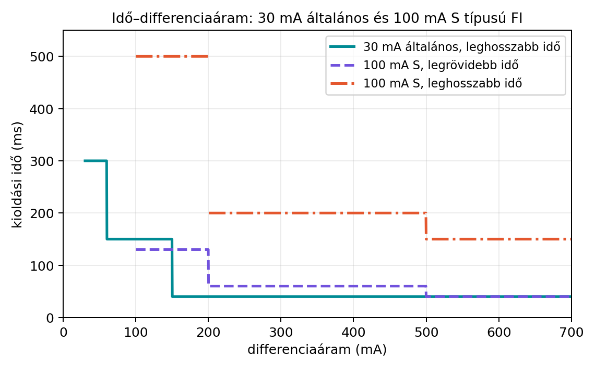

Egy társasház lakáselosztójában zárlat keletkezik egy konnektor mögött. A lakás kismegszakítója leold, ez rendben van. A lépcsőházban azonban elsötétül a folyosó, mert a főelosztóban lévő, nagyobb névleges áramú megszakító is leoldott. A hiba miatt az egész lépcsőház áramtalan lett. Az ilyen hibák tervezéssel, a védelmi eszközök szándékos koordinációjával elkerülhetők: ez a szelektivitás. A cél az, hogy a hiba helyéhez legközelebbi védelem oldjon ki, a mögötte álló tartalék védelmek pedig bekapcsolva maradjanak. Ipari elosztóhálózatokban, többszintes épületekben és gépi vezérléseknél ugyanez a kérdés: a fő és az alárendelt védelmek sorrendje és összehangolása határozza meg az üzem folytonosságát.
Képzeljünk el egy elosztót: a betáplálásnál a 63 A-es C jellegű főmegszakító (Q1) a gyűjtősínt táplálja, a sínről több leágazás indul, mindegyik a saját 16 A-es vagy 10 A-es kismegszakítójával (F1, F2, F3). A hiba az F1 leágazásában, az F1 utáni szakaszon keletkezik. A zárlati áram Q1-en és F1-en is átfolyik – a két készülék a hibaáram útjában sorosan van. Ha mindkét megszakító azonnal elindul, a nagyobb sem feltétlenül jár le később: a kisebbnek kell megnyernie a versenyt.
Kövesd végig a rajzon a hibaáram útját: a táplálás L kapcsától Q1-en át a gyűjtősínre, onnan F1-en át a zárlat helyére (az L és az N közötti, a konyhai fogyasztóval párhuzamos kis ellenállású összeköttetés), majd az N vezetőn vissza. F2 és F3 áramkörében nem folyik hibaáram – ezek a leágazások hibátlanok. Ha csak F1 old ki (szelektív működés), a szoba aljzatai és a világítás tovább üzemelnek; ha Q1 is kiold (nem szelektív működés), a hibátlan F2 és F3 is áramtalan lesz – ez történt a motiváció lépcsőházában. A kérdés tehát az, hogyan biztosítjuk, hogy a hibát mindig a hozzá legközelebbi védelem (itt F1) szakítsa meg. Ebben a fejezetben a leágazás kismegszakítóját a rajz szerint F1-gyel, a táplálás felőli főmegszakítót Q1-gyel jelöljük.
Definíció. (Szelektivitás) Két, sorosan kapcsolt túláramvédelmi eszköz akkor szelektív, ha a hibaáram hatására – a hibához közelebbi (alárendelt) védelem old ki, míg a táplálás felőli (fő) védelem bekapcsolva marad. A teljes szelektivitás azt jelenti, hogy ezt a hibahely összes lehetséges zárlati áramára garantáljuk; részleges szelektivitás csak egy meghatározott áramértékig áll fenn.
Definíció. (Áramszelektivitás) Két, különböző névleges áramú kismegszakítónál a kisebb megszakító pillanatkioldó tartománya alacsonyabb áramoknál kezdődik, mint a nagyobbé. Ha a zárlati áram a kisebb pillanatkioldó tartományába esik, de a nagyobbéba még nem, a kisebb gyorsan (kb. 0,01 s alatt) lekapcsol, míg a nagyobb a termikus (lassú) tartományában van, így nem tud leoldani a rövid ideig tartó áramlökéstől. Ezt nevezzük áramszelektivitásnak, mert a szelektivitás elsősorban a különböző kioldási áram-tartományokon alapul.
A nagy zárlati áram nemcsak a szelektivitást és a megszakítóképességet teszi próbára: a kapcsolási ív és a villamos ív személyi veszélye is vele nő, lásd Kockázatértékelés, védőeszközök, balesetek és tűzvédelem, „A villamos ív veszélye”.
Definíció. (Időszelektivitás) Ha a hibáram olyan nagy, hogy mindkét védelem pillanatkioldó tartományában van, az áram alapú megkülönböztetés nem elegendő. Ilyenkor a táplálás felőli megszakítón szándékos késleltetést állítanak be: a főmegszakító csak például s múlva old, az alárendelt viszont pillanatszerűen. Az alárendelt kikapcsol, az áram megszűnik, a főmegszakító időzítése visszaáll, és bekapcsolva marad. Ez a módszer ipari elosztókban, nagy zárlati áramú helyeken gyakori.
A szakma a szelektivitást a két készülék idő-áram sávjának egymásra rajzolásával ellenőrzi. Az alábbi ábrán a feladatgyűjteménybeli (18.4) példa C63 (Q1) és B16 (F1) készülékének szemléltető sávja látható két zárlati áramnál.
Ábraolvasás. Húzz függőleges vonalat a várható zárlati áramnál, és nézd meg, hol metszi a két sávot. Az (a) esetben a 300 A-es vonal a B16 sávját a pillanatkioldó (vízszintes, kb. 0,01 s-os) részén metszi, a C63 sávját viszont a termikus részén, ahol a C63 legkorábban kb. 0,4 s múlva oldana – addigra a B16 régen megszakított: csak az alsó old. A (b) esetben a 400 A-es vonal mindkét sávot a pillanatkioldó részen metszi (400 A > 315 A): a két sáv átfed, a kimenetel a sávokból nem dönthető el, ehhez gyártói szelektivitási táblázat kell. Az interaktív változatban a felső készülék lehet C32/C40/C63 kismegszakító, gG 32/63/100 A betét vagy késleltetett 125 A-es megszakító (0,1/0,2/0,3 s rövid késleltetéssel), az alsó B10, B16, C16 vagy B20; az Ik csúszkával keresd meg, meddig szelektív egy pár. Figyeld meg, hogy a késleltetett megszakító sávja a rövid késleltetés idejénél „lépcsőt” kap, ezért nagy zárlati áramnál is a B16 fölött marad (időszelektivitás). A sávok szemléltetők; a gyártói görbe és táblázat a mérvadó.
Definíció. (Hátvédelem, cascading) A hátvédelem azt jelenti, hogy egy nagyobb megszakítóképességű, a táplálás felőli megszakító korlátozza a zárlati áram csúcsát vagy az áramimpulzus idejét olyan mértékben, hogy az alárendelt, kisebb megszakítóképességű készülék képes a hibát megszakítani, pedig a névleges megszakítóképessége önmagában nem lenne elegendő. Ez csak a gyártó által bevizsgált és közzétett kombinációkra igaz; a hátvédelmi táblázatok tartalmazzák a megengedett párokat és a megnövelt megszakítóképesség értékét. A hátvédelem nem azonos a szelektivitással: hátvédelemnél megengedett, hogy a fővédelem is beavatkozzon, a cél a biztonságos megszakítás.
Szabály. Az elosztó védelmi sorrendje: a táplálás felől haladva egyre kisebb névleges áramú és – ha lehet – gyorsabb kioldású eszközök következnek. A főmegszakító a teljes elosztó zárlati védelmét adja; az alárendelt védelmek a csoportokét. A tervezés során először a várható zárlati áramot kell ismerni, utána ellenőrizni a megszakítóképességet, végül a szelektivitást vagy hátvédelmet.
A hazai elosztásban a leggyakoribb sor a mérőhelyi olvadóbetét (vagy NH-leágazás) után következő betét vagy kismegszakító.
Betét–betét. Azonos gyártmányú gG
betéteknél a gyakorlati szabály: a táplálás felőli betét névleges árama
legalább 1,6-szorosa legyen az alárendeltének
(ellenőrizendő: MSZ EN 60269-1/-2, gyártói táblázat).
Indok: a felső betét olvadási (ívgyulladás előtti, pre-arcing)
-je
legyen nagyobb, mint az alsó teljes (olvadási és ív-)
-je.
| Felső → alsó | Arány | Értékelés |
|---|---|---|
| 100 A → 63 A | 1,59 ≈ 1,6 | szelektív |
| 63 A → 40 A | 1,58 ≈ 1,6 (két lépcső a névleges sorban) | szelektív |
| 50 A → 40 A | 1,25 | nem szelektív |
| 32 A → 20 A | 1,60 | szelektív |
| 25 A → 16 A | 1,56 | határeset, gyártói táblázat dönt |
Betét–kismegszakító. A pár addig szelektív, amíg a kismegszakító átengedett -je kisebb a felső betét legkisebb olvadási -jénél. Ez a zárlati árammal romlik, ezért a gyártók szelektivitási határáramot () adnak meg (kitalált tanulási adat, például: B16 a gG 32 A mögött ; a Tanulási adattáblák táblázata). Ha a beépítés helyén , teljes a szelektivitás; ha nagyobb, csak részleges.
Fordított sorrend (kismegszakító a táplálás felől, betét alatta) ritka, és általában nem szelektív.
Szabvány. A kisfeszültségű villamos berendezések túláramvédelmére vonatkozó követelményeket az MSZ HD 60364-4-43 tartalmazza: a védelmi eszközök megszakítóképessége nem lehet kisebb, mint a várható zárlati áram a beépítési helyen; hátvédelem esetén a két eszköz kombinációja is elfogadható, ha a gyártó ezt igazolja (jellemzően táblázatban). A megszakítókra az MSZ EN 60947-2, a kismegszakítókra az MSZ EN 60898-1 vonatkozik; a koordinációs jellemzők a termékszabványokban és a gyártói katalógusokban találhatók. A pontos értékeket, a hátvédelmi táblázatok határait és az aktuális kiadási számokat mindig ellenőrizni kell a gyártói adatlappal és a hatályos szabványkiadással.
Egy háromszintes irodaházban a főelosztóban 125 A-es kompakt megszakítót szereltek, a szinti elosztók bemenetén 63 A-es szelektív (késleltetett) főkismegszakítókat. A szinti elosztók mögött a végáramkörök 16 A-es B jellegű kismegszakítókkal védettek. Az egyik emeleten egy irodai konnektorban zárlat keletkezett: a 16 A-es megszakító pillanatszerűen leoldott. A zárlati áram kb. 500 A volt, ami egy közönséges 63 A-es C kismegszakítónál a pillanatkioldó sávba () esne, ezért ott a szelektivitás nem lett volna garantált. A szinti elosztó bemenetén azonban késleltetett, szelektív főkismegszakító volt, amelyre a gyártói táblázat a 16 A-es B ággal szemben a várható zárlati áramig szelektivitást adott (ellenőrizendő: gyártói szelektivitási táblázat), így a szinti elosztó bekapcsolva maradt. Az iroda csak egy konnektorról veszítette el az áramkört, a szint többi része működött tovább. A tanulság: a szelektivitást nem „ránézésre”, hanem gyártói táblázatból kell ellenőrizni.
A másik gyakori eset a FI-relék (áram-védőkapcsolók) koordinációja. A főelosztóban 100 mA-es, S típusú (szelektív, késleltetett) FI-relé védi a szintet, a lakáselosztóban 30 mA-es, normál típusú FI. Ha a végáramkörben földzárlat keletkezik, a 30 mA-es azonnal leold; a 100 mA-es S a késleltetése miatt bekapcsolva marad. Ez az áram- és időszelektivitás együttes alkalmazása.
A két készülék kioldási idejét a differenciaáram függvényében az alábbi ábra veti össze: ha a 30 mA-es általános típus legnagyobb kioldási ideje az S típus legkisebb ideje (a késleltetés) alatt marad, az alsó FI hamarabb old. A típusok kiválasztását az Áram-védőkapcsoló (FI) és kiegészítő védelem, a vizsgálati határokat a Mérések II.: hurokimpedancia, zárlati áram, FI-vizsgálat alfejezet tárgyalja.

Az ábrán jól látszik a korlát is: 100 és 150 mA között a 30 mA-es készülék leghosszabb ideje (150 ms) hosszabb, mint az S típus legrövidebb ideje (130 ms), 500 mA fölött pedig a két határ egybeesik (40 ms). A határértékek tehát nem minden árampontban garantálják a szelektivitást; a gyártói koordinációs adat a mérvadó.
Hiba 1. „A nagyobb névleges áramú megszakító úgyis később old, mint a kisebb.” Ez csak a termikus tartományban igaz. Nagy zárlati áramnál mindkét megszakító pillanatkioldója elindulhat, és a nagyobb mechanikája sem mindig lassabb. Ilyenkor a gyártói táblázat nélkül nincs garancia a szelektivitásra.
Hiba 2. A hátvédelmi táblázatot figyelmen kívül hagyva a szerelő egy kisebb megszakítóképességű kismegszakítót épít be olyan helyre, ahol a várható zárlati áram nagyobb. A kismegszakító névleges adata önmagában nem elég; ha nincs hátvédelmi kombináció, a készülék tönkremehet vagy nem tudja megszakítani a zárlatot.
Hiba 3. FI-relék soros kapcsolásánál a főFI normál, 30 mA-es típus, az alárendelt is 30 mA-es. Földzárlatnál mindkettő kioldhat, mert a differenciaáram mindkettőn átfolyik, és nincs időbeli késleltetés. A helyes megoldás: a főFI 100 mA S típus, az alárendeltek 30 mA gyors típusok.
Hiba 4. Az időszelektivitásnál a késleltetést túl kicsire állítják, például 0,02 s-ra, miközben az alárendelt megszakító 0,01 s-os, de a mechanikai szórás miatt a gyakorlatban 0,03-0,05 s is lehet. A fővédelem így leoldhat, és a szelektivitás elvész.
Gyakorlás: ennek az alfejezetnek a kidolgozott példái, gyakorlatai és megoldással ellátott feladatai az Összefoglaló feladatgyűjtemény villanyszerelő tanulóknak című kötet 18.4 szakaszában találhatók.
A szelektivitás biztosítja, hogy soros védelmek közül a hiba helyéhez legközelebbi oldjon ki, míg a táplálás felőli védelem bekapcsolva marad. Áramszelektivitásnál a kisebb kismegszakító pillanatkioldó tartománya alacsonyabb áramoknál kezdődik, mint a nagyobbé, így a hibaáram csak a kisebbet kényszeríti gyors leoldásra. Ha mindkettő a gyors tartományában van, időszelektivitást alkalmazunk: a főmegszakítón szándékos késleltetést állítunk be. A hátvédelem (cascading) nem üzem-folytonossági, hanem megszakítóképességi kérdés: a gyártói táblázatban igazolt kombinációval az alárendelt készülék nagyobb zárlati áramot is megszakíthat. FI-reléknél S típusú (késleltetett) főFI-t használunk. A pontos értékeket mindig gyártói adatlapból és hatályos szabványból kell ellenőrizni. Továbbvitt eredmény. A szelektivitás és hátvédelem elve az ipari elosztóhálózatok méretezésének alapja; ezt az Ipari elosztóhálózatok jellemzői és topológiája alfejezetben alkalmazzuk majd a hálózatfelépítés és a védelmi lánc kiválasztásakor.
A fejezetben említett szabványok: MSZ HD 60364-4-43 (túláramvédelem), MSZ EN 60947-2 (megszakítók), MSZ EN 60898-1 (kismegszakítók). A konkrét kioldási tartományok (B: 3–5 , C: 5–10 ) és a hátvédelmi táblázati példák (megnövelt megszakítóképesség) tájékoztató jellegűek; minden egyes készülék esetén a gyártó aktuális adatlapja és a hatályos szabvány az irányadó. (ellenőrizendő: gyártói koordinációs táblázatok, kioldási tartományok, szabványkiadások)